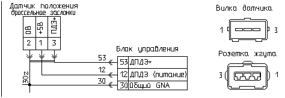

главная → коды ГАЗ
Код 072—высокая частота вращения коленвала на холостом ходу (ХХ)
- Причина 1: коксование регулятора дополнительного воздуха в открытом состоянии.
- Причина 2: повышенный просос воздуха через закрытый дроссель.
- Причина 3: нарушение градуировки датчика температуры охлаждающей жидкости.
- Причина 4: негерметичность термостата двигателя.
- Причина 5: повышенное давление топлива.
- Причина 6: негерметичность форсунок впрыска бензина.
- Причина 7: повреждение вакуумного шланга регулятора давления топлива.
- Причина 8: неисправность блока управления двигателем.
Коксование регулятора дополнительного воздуха в открытом состоянии
- Проверьте: возможно в системе питания двигателя воздухом имеет место коксование затвора регулятора дополнительного воздуха (РДВ) в открытом состоянии, что привело к повышенному прососу воздуха через неплотно закрытый регулятор.
- Демонтируйте РДВ, промойте его в керосине и просушите, установите на автомобиль.
- После профилактики РДВ сбросьте коды неисправности, запустите и прогрейте двигатель, проконтролируйте отсутствие кода «072».
Повышенный просос воздуха через закрытый дроссель

- Проверьте: возможно в системе питания двигателя воздухом имеет место просос воздуха через неплотно закрытый дроссель.
- Включите зажигание и измерьте напряжение на выходе датчика положения дросселя (между выводами «2-плюс» и «3-0В» датчика), если напряжение выше 0,7 В, то вероятно дроссель неплотно закрыт. Отрегулируйте привод дросселя на полное закрытие.
- После профилактики дроссельного устройства сбросьте коды неисправности, запустите и прогрейте двигатель и проконтролируйте отсутствие кода «072».
Нарушение градуировки датчика температуры охлаждающей жидкости

- Проверьте: возможно градуировка датчика температуры охлаждающей жидкости не соответствует эталонной.
- Если после запуска и прогрева двигателя от температуры окружающей среды выше 15°C его обороты после 5 минут работы не падают до минимальных на холостом ходу, то проверьте значение параметра «Температура охлаждающей жидкости». Возможно:
- негерметичен термостат, что не позволяет прогреть двигатель до температуры по крайней мере 75°C;
- в процессе эксплуатации нарушена градуировка датчика температуры охлаждающей жидкости;
- неисправен канал ДТОХЛ (контакт «45») блока управления.
- Охладите двигатель до температуры окружающей среды.
- Проверьте параметры блока управления при включенном зажигании: температура охлаждающей жидкости не должна быть ниже температура воздуха более, чем на 5°C—в противном случае датчик температуры охлаждающей жидкости может быть неисправен.
- Значения, измеренные блоком можно сравнить с показаниям термометра—они не должны отличаться более, чем на 10°C.
- Замените датчик на заведомо исправный.
- Включите зажигание, сбросьте коды неисправности, запустите двигатель, прогрейте его и проконтролируйте отсутствие кода «72».
Негерметичность термостата двигателя
- Если после запуска и прогрева двигателя от температуры окружающей среды выше 15°C его обороты после 5 минут работы не падают до минимальных на холостом ходу, то проверьте значение параметра «Температура охлаждающей жидкости».
- Если температура остается ниже 65°C, то вероятно негерметичен термостат, что не позволяет прогреть двигатель до температуры по крайней мере 75°C.
- Замените термостат на заведомо исправный.
- Включите зажигание, сбросьте коды неисправности, запустите двигатель, прогрейте его и проконтролируйте отсутствие кода «072».
Повышенное давление топлива
- Проверьте: возможно имеет место повышенное давление топлива в топливной рампе по причине неисправности регулятора давления топлива.
- С помощью поверенного манометра при незапущенном двигателе измерьте абсолютное давление топлива в топливной рампе: если давление выше 3,3 кГс/см² (323 кПа), то вероятно неисправен регулятор давления топлива.
- После замены регулятора давления топлива сбросьте коды неисправности, запустите двигатель, прогрейте его и проконтролируйте отсутствие кода «072».
Негерметичность форсунок впрыска бензина
- Проверьте: возможно имеет место негерметичность фосунок впрыска бензина, что увеличивает количество топлива, поступающего в цилиндры двигателя и обогащает топливо-воздушную смесь.
- Для оценки неравномерности работы цилиндров по топливоподаче на холостом ходу воспользуйтесть процедурой активного управления форсунками: если неравномерность в работе двигателя практически не изменяется при отключении канала управления форсункой—форсунка неисправна.
- Демонтируйте топливную рампу, не отключкая от топливной магистрали. Включите электробензонасос.
- Способ 1. Для герметичной форсунки из ее распылителя не должно вытекать более одной капли в минуту, если утечка топлива через какую либо форсунку больше—форсунка неисправна.
- Способ 2. Подключите форсунку к магистрали сжатого воздуха с давлением 3..6 кГ/см², обмотку форсунки—к источнику 12 В, затем погрузите выходное отверстие форсунки в воду—утечки воздуха через форсунку быть не должно.
- Замените форсунку на исправную.
- Включите зажигание и сбросьте коды неисправности, запустите двигатель, прогрейте его и проконтролируйте отсутствие кода «072».
Повреждение вакуумного шланга регулятора давления топлива
- Проверьте: возможно имеет место неплотное прилегание к штуцеру или повреждение вакуумного шланга регулятора давления топлива, что может привести к пониженному относительному давлению топлива в топливной рампе.
- После устранения неисправности сбросьте коды неисправности, запустите и прогрейте двигатель, проконтролируйте отсутствие кода «072».
Неисправность блока управления двигателем

- Отсоедините блок управления от жгута проводов и внимательно осмотрите целостность контактов розетки жгута и вилки блока.
При необходимости отрихтуйте контакты соединителя или замените их. При обнаружении воды в соединителе блок необходимо снять, остатки
воды удалить, просушить блок при температуре не выше 85°C.
- Подключите к системе контрольный блок управления.
- После замены тестируемого блока на контрольный включите зажигание, запустите двигатель и проконтролируйте отсутствие кода неисправности «072».
- Если код «072» не регистрируется на контрольном блоке, то замените тестируемый блок на исправный.
|